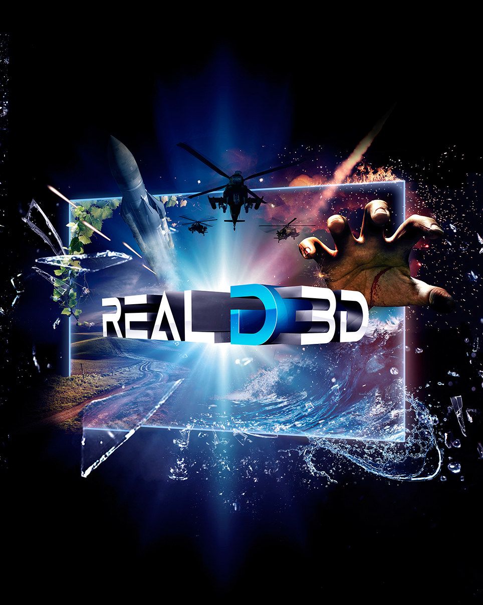

<!DOCTYPE html>
<html lang="ru">			
	<head>

		<meta charset="utf-8">
		<meta name="viewport" content="width=device-width, initial-scale=1">
		<link rel="stylesheet" href="css/style.css">
		<link rel="stylesheet" href="css/css.css">
		<link rel="preconnect" href="https://fonts.gstatic.com">
		<script src="https://code.jquery.com/jquery-3.2.1.js"></script>
    	<link rel="stylesheet" href="https://maxcdn.bootstrapcdn.com/font-awesome/4.7.0/css/font-awesome.min.css">		
		<link href="https://fonts.googleapis.com/css2?family=Montserrat:wght@100&display=swap" rel="stylesheet">
		<script src="main.js"></script>
		<title>Кинотеатр MaSo</title>		
	</head>

	<body>    
		<header class="header">
			<div class="container">
				<div class="header_inner">
					<p class="header_logo"></p>
					<nav class="nav">
						<a class="nav_link" href="#Afisha">Афиша</a>
						<a class="nav_link" href="#About">О нас</a>
						<a class="nav_link" href="#MASO">MASO.FAMILY</a>
						<a class="nav_link" href="#vakansi">Вакансии</a>
						<a class="nav_link" href="#Partners">Партнёрам</a>
						<a class="nav_link" href="#Luxe">Luxe</a>
						<a class="nav_link" href="#Contacts">Контакты</a>
						<a class="nav_link"  id="ik" onclick="show('block')"><i class="fa fa-user-circle-o"></i></a>
					</nav>
				</div>
			</div>
		</header>

                                 <!--Форма авторизации и регистрации-->
<div id="gray" onclick="show('none')"></div>
<div class="dws-form">
        <label class="tab active" title="Вкладка 1">Авторизация</label>
        <label class="tab" title="Вкладка 2">Регистрация</label>
        <form id="form-1" class="tab-form active">
            <input class="input" type="email" placeholder="Введите E-mail">
            <input class="input" type="password" placeholder="Введите пароль">
            <a href="#" class="button">Войти</a>
            <ul class="social">
                <li><a href="#"><i class="fa fa-facebook"></i></a></li>
                <li><a href="#"><i class="fa fa-twitter"></i></a></li>
                <li><a href="#"><i class="fa fa-vk"></i></a></li>
                <li><a href="#"><i class="fa fa-whatsapp"></i></a></li>
                <li><a href="#"><i class="fa fa-instagram"></i></a></li>
            </ul>
            <a href="#">Забыли пароль?</a>
        </form>
        <form id="form-2" class="tab-form">
            <input class="input" type="email" placeholder="Введите E-mail">
            <input class="input" type="text" placeholder="Введите своё имя">
            <input class="input" type="text" placeholder="Введите свою фамилию">
            <input class="input" type="password" placeholder="Введите пароль">
            <a href="#" class="button">Регистрация</a>
            <div class="recover">
                <input type="checkbox" id="ckbox">
                <label for="ckbox">Ознамолен(а) и принимаю <a href="#">условия регистрации</a></label>
            </div>
        </form>
        <script>
		//Функция показа
			function show(state)
			{
			document.getElementById('dws-form').style.display = state;	
			document.getElementById('gray').style.display = state; 		
			}	
		</script>
</div>

		<div class="intro">
			<div class="container">
				<div class="intro_inner"> 
					<h1 class="intro_title"> Добро пожаловать в кинотеатр MASO!</h1>
				</div>
			</div>
		</div>

			<p></p>
		
		<section class="section" id="Afisha">
			<div class="container">
				<div class="section_header">
					<h2 class="section_title">Афиша</h2>
				</div>

				<div class="afisha">
					<div class="afisha_items">
						<div class="afisha_img">
							
						</div>
						<div class="afisha_text">После выхода на пенсию бывший комиссар полиции (Морган Фриман) понял, что прикрывать продажных детективов было ошибкой.  Но чтобы подчистить за собой город, он выбирает не самый гуманный способ. Похитив невинного ребенка, он шантажирует его мать (Руби Роуз). В попытке спасти дочь  женщина становится орудием в войне против разбушевавшегося криминала. Впрочем, теперь ее гнева хватит не только на преступников.</div>
					</div>
					<div class="afisha_items">
						<div class="afisha_img">
							
							<div class="afisha_text">Доминик Торетто ведет спокойную жизнь вместе с Летти и своим сыном Брайаном, однако, они знают, что новая опасность всегда где-то рядом. В этот раз Доминику придется встретиться с призраками прошлого, если он хочет спасти самых близких. Команда снова собирается вместе, чтобы предотвратить дерзкий план по захвату мира, который придумал самый опасный преступник и безбашенный водитель из всех, с кем они сталкивались ранее.</div>
						</div>
					</div>
					<div class="afisha_items">
						<div class="afisha_img">
							
							<div class="afisha_text">Эйч (Джейсон Стейтем) – загадочный и холодный на вид джентльмен, но внутри него пылает жажда правосудия. Преследуя свои мотивы, он намерен найти заказчика серии многомиллионных ограблений, потрясших Лос-Анджелес. В этой запутанной игре у каждого своя роль, но виновные обязательно познают гнев человеческий.</div>
						</div>
					</div>						
				</div>
				<div class="afisha1">
					<div class="afisha_items1">
						<div class="afisha_img1">
							
							<div class="afisha_text">Это первый масштабный российский фильм, рассказывающий о ликвидации последствий аварии на Чернобыльской АЭС и людях, которым ценой своей жизни удалось предотвратить глобальную катастрофу и превращение большей части европейского континента в гигантскую зону отчуждения и необитаемую пустыню.</div>
						</div>
					</div>
					<div class="afisha_items1">
						<div class="afisha_img1">
							
							<div class="afisha_text">Продолжение истории маленького и непоседливого кролика по имени Питер, героя знаменитой детской книги. Беатрис, Томас и крольчата, наконец, находят общий язык и начинают спокойную и размеренную жизнь за городом. Однако Питеру это совсем не по нраву: его мятежная душа требует приключений, и он отправляется на их поиски в большой город, туда, где его проделки уж точно оценят по достоинству. Тем временем, члены его большой дружной семьи, рискуя жизнью, отправляются вслед за Питером, чтобы вернуть его домой, и теперь беглецу предстоит решить, что же для него важнее всего.</div>
						</div>
					</div>
					<div class="afisha_items1">
						<div class="afisha_img1">
							
							<div class="afisha_text">Энтони далеко не молод. Он живет один в Лондоне, что очень тревожит его дочь. Она не хочет оставлять отца без присмотра и пытается найти ему сиделку. Энтони отметает все предложенные варианты. Однако, планируя переезд в Париж, дочь не спешит сдаваться. Она становится все настойчивее в своих попытках найти для упрямого папочки идеальную женщину.</div>
						</div>
					</div>						
				</div>
				<div class="afisha2">
					<div class="afisha_items2">
						<div class="afisha_img2">
							
							<div class="afisha_text">Импульсивный детектив полиции Нью-Йорка Зик Бэнкс всю жизнь пытается вырваться из тени своего отца, прославленного ветерана правоохранительных органов. Однажды Бэнксу и его новому напарнику поручают расследование серии жестоких убийств, которые странным образом напоминают преступления прошлых лет. Так они оказываются в эпицентре зловещей игры, и цена проигрыша в ней — человеческая жизнь.</div>
						</div>
					</div>
					<div class="afisha_items2">
						<div class="afisha_img2">
							
							<div class="afisha_text">1930-е годы, Англия. Католический священник вместе с женой и дочерью переезжает к новому месту службы. Церковь поручает ему возродить веру жителей небольшого городка, которая поколебалась после череды таинственных и страшных смертей, произошедших с домочадцами предыдущего преподобного. Чтобы раскрыть жуткую тайну, начинающую угрожать и им самим, членам семьи священника приходится объединить усилия с известным оккультистом и исследователем паранормальных явлений Гарри Прайсом.</div>
						</div>
					</div>
					<div class="afisha_items2">
						<div class="afisha_img2">
							
							<div class="afisha_text">Однажды Оуэн обнаруживает секретную коробку с печеньем, принадлежавшую его дяде Бобу. Магическое печенье превращает любого, кто его съест, в животного, а стоит его разломать, как снова станешь человеком. С помощью такой магии Хантингтоны намерены создать беспрецедентное звериное шоу, но вскоре они выясняют, что их главным конкурентом остается владелец самой крупной цирковой сети — Горацио.</div>
						</div>
					</div>						
				</div>

			</div>
		</section>

		<section class="about_us" id="About">
			<div class="container">
				<div class="about_header">
					<h2 class="about_title">О нас</h2>
					<p class="about_text">Сеть кинотеатров «MASO», основанная в 2020 году, установила новые стандарты оформления кинозалов в России. На сегодняшний день «КАРО» является новой сетью кинотеатров в России, управляющей 2 современными кинотеатрами в Казани.</p>	
					<p class="about_text">Контролирующим акционером «MASO» является консорциум в составе ведущего инвестора UFG Private Equity, Российского фонда прямых инвестиций (РФПИ) и предпринимателя Пола Хета.</p>
					<p class="about_text">1 октября 2020 года сеть «MASO» стала первой 100% цифровой киносетью в России, обеспечив зрителям максимально высокий уровень кинопоказа.</p>
					<p class="about_text">Летом в 2020 году сеть кинотеатров «MASO» открыла один из самых больших мегаплексов в мире «MASO Vegas 22». В марте 2021 года в крупнейшем торговом центре Казани «KazanMall» был открыт кинокомплекс «MASO Sky 17» c 17 залами. Всё лето для казанцев и гостей столицы работают летние кинотеатры — MASO под открытым небом.</p>
					<p class="about_text">«MASO» признана лучшей киносетью года на европейском рынке международной конвенцией CineEurope, став первой российской киносетью, которая получила эту награду.</p>
				</div>
			</div>			
		</section>

		<section class="maso_family" id="MASO">
			<div class="container">
				<div class="family_header">
					<h2 class="family_title">MASO.FAMILY</h2>
		</section>	
		<div id="slider"></div>
		<script>
						var images = ['maia.jpg', 'magia.jpg', 'rufus.jpg', 'mult.jpg', 'oops.jpg', 'smesh.jpg', 'zvero1.jpg', 'pono.jpg'];
						var slider = document.querySelector('#slider');
						var img = slider.querySelector('img');
						var i = 1;
						img.src = 'images1/' + images[0];
						window.setInterval(function(){
							img.src = 'images1/' + images[i];
							i++;
							if (i == images.length){
								i = 0;
							}
						}, 5000);
					</script>
		<section class="family">
			<div class="container">	
				<div class="family_project">		
					<h2 class="project_title">О ПРОЕКТЕ</h2>
					<p class="family_text">MASO.Family — направление сети кинотеатров Каро, аккумулирующее в себе наиболее привлекательные предложения для семейной аудитории:</p>
				</div>	
			</div>
		</section>

		<div class="discription">
			<div class="container">
				<div class="disc">
				<div class="disc_item">Специальные ценовые предложения</div>
				<div class="disc_item">Анимационные программы</div>
				<div class="disc_item">Семейное кино</div>
				<div class="disc_item">Специальные проекты для детей с расстройствами аутистического спектра</div>
				<div class="disc_item">Проекты «Мульт в кино»</div>
				</div>				
			</div>
		</div>

		<section id="vakansi">
			<div class="container">
				<h2 class="vak_title">Присоединяйся к нашей команде!</h2>
				<p class="vak_title">Работа в MASO — это:</p>
				<div class="karier">
					<li class="first">
						<div class="left">
							
						</div>	
						<div class="right">
							<h6>Гибкий график</h6>
							<p>Выбирай удобное для тебя время и легко совмещай работу со своими интересами. Настройся на удобный для тебя ритм, а мы с радостью поддержим тебя в этом.</p>
						</div>
					</li>
					<li class="second">
						<div class="left">
							
						</div>	
						<div class="right">
							<h6>Конкурентная заработная плата</h6>
							<p>Предоставляемый компенсационный пакет позволяет быть уверенным в завтрашнем дне и в стабильности!</p>
						</div>
					</li>
					<li class="third">
						<div class="left">
							
						</div>	
						<div class="right">
							<h6>Официальное трудоустройство</h6>
							<p>Отношения с работодателем оформляются в рамках действующего законодательства.</p>
						</div>
					</li>
					<li class="fourth">
						<div class="left">
							
						</div>	
						<div class="right">
							<h6>Выбери свой кинотеатр</h6>
							<p>3 абсолютно новых кинотеатра в Казани, и их количество становится больше!</p>
						</div>
					</li>
					<li class="fifth">
						<div class="left">
							
						</div>	
						<div class="right">
							<h6>Перспективы и возможность карьерного роста</h6>
							<p>В нашей компании ценят сотрудников и предоставляют обучение способствующее профессиональному и личностному обучению. Расти вместе с нами!</p>
						</div>	
					</li>						
				</div>
				<div class="predlozhenie">
					<h2 class="pred_title">В наших кинотеатрах есть различные позиции,</h2> 
					<h2 class="pred_title"> на которые ты можешь претендовать.</h2>
					<p class="pred_text">Сотрудник кинотеатра — это стартовая позиция
нашей компании и она не требует обязательного опыта работы.</p>
					<div class="block_pred">
						<h4 class="h4">У нас открыты вакансии:</h4>
						<h5 class="h5">Контролер-кассир</h5>
						<p>Ведение кассовых операций, работа с ККМ и материальными ценностями,
обслуживание гостей, работа в кинобаре или VIP баре, знание ассортимента продаваемой
продукции, репертуара, стандартов компании, контроль билетов.</p>
						<p class="p">Все сотрудники кинотеатра работают вместе —
в дружелюбной поддерживающей командной обстановке!</p>
						<h4 class="h4">Как устроиться к нам на работу</h4>
						<p>Ты можешь работать в MASO, если: ты гражданин РФ
и тебе исполнилось 18 лет.</p>
						<div>
							<div class="span">1</div>
							<p class="pred_p">Сначала выбери кинотеатр, в котором тебе будет удобно работать. Выбрать кинотеатр ты можешь при заполнении заявки.</p>
							<div class="span">2</div>
							<p class="pred_p">Заполни онлайн-заявку. Если заявка будет принята — с тобой свяжутся сотрудники кинотеатра и пригласят на собеседование.</p>
							<div class="span">3</div>
							<p class="pred_p">При успешном прохождении собеседования, руководство кинотеатра сделает тебе предложение о работе.</p>
							<h4 class="h4">Добро пожаловать!</h4>
						</div>
					</div>
				</div>
			</div>
		</section>

		<section class="partners" id="Partners">
			<div class="container">				
				<div class="partners_header">
					<h2 class="partners_title">СОТРУДНИЧЕСТВО С MASO</h2>
					<div class="partners_text">
						<p class="p_part">ПРОВЕДЕНИЕ МЕРОПРИЯТИЙ В КАРО</p>
						<p class="p_part">Сеть кинотеатров «КАРО» приглашает к взаимовыгодному долгосрочному сотрудничеству компании, готовые к новым интересным проектам. Благодаря инновационным разработкам и сотрудничеству с всемирно известными брендами, сеть «КАРО» может предложить самый широкий спектр услуг на российском рынке кинопоказа. Мы открыты для обсуждения проектов в различных областях – от строительства новых кинотеатров, внедрения новейших информационных технологий и сотрудничества в области маркетинга до реализации Вашей продукции в кинобарах.</p>
						<p></p>
						<p class="p_part">Мы предлагаем услуги по организации премьер и специальных показов, конференций, корпоративных мероприятий и фуршетов.</p>
						<p></p>
						<p class="p_part">Для проведения мероприятий доступны кинозалы от 30 до 1509 мест, в том числе зоны привилегированного обслуживания КАРО Престиж с собственным фойе.</p>					
						<p></p>
						<p class="p_part">Подробнее о возможностях аренды залов Вы можете ознакомиться в нашей презентации.</p>
						<p></p>
						<p class="p_part">АРЕНДА</p>
						<p class="p_part">Компания КАРО предлагает в аренду помещения в кинотеатрах. Свободные площади от 5 до 600 м2. c высокой проходимостью.Возможное применение площадей: бар, кафе, салон красоты, офис продаж, фитнес центр, магазин, банк и т.д. Готовы рассмотреть смелые концепции!Стоимость, детали аренды обсуждаются индивидуально. Чертежи, расположение площадей предоставляются по запросу.</p>
					</div>
					<div class="img_part">
						
						<p></p>
						
						<p></p>
						<p class="p_part1">По вопросам размещения рекламы в кинотеатрах пишите на cinema_sales@karofilm.ru</p>
						<p class="p_part1">По вопросам аренды площадей пишите на com@karofilm.ru</p>
						<p class="p_part1">По вопросам проведения мероприятий и аренды залов пишите на event@karofilm.ru или обращайтесь по телефону +7(903)673-69-45</p>
						<p class="p_part1">По вопросам сотрудничества в области маркетинга и рекламы - reklama@karofilm.ru</p>
						<p class="p_part1">По остальным вопросам Вы можете обращаться к нам на feedback@karofilm.ru</p>
					</div>
					<h2 class="part_title">Сеть кинотеатров нового поколения «КАРО» предлагает своим гостям самые современные технологии кинопоказа и высочайший уровень обслуживания. Наша компания дорожит своей репутацией и тщательно подходит к выбору партнеров, предоставляющих продукцию и услуги посетителям мегаплексов. Мы сотрудничаем с известными брендами, которые хорошо зарекомендовали себя в своей отрасли.</h2>
				</div>
			</div>
		</section>

		<section class="luxe" id="Luxe">
			<div class="container">
				<div class="luxe_block">
					<div class="luxe_header">
						<h2 class="luxe_title">LUXE</h2>
					</div>
					<div class="luxe_img">
						
						<p></p>
						<h2 class="img_title">ПЕРВОКЛАССНЫЙ УРОВЕНЬ КИНОПОКАЗА В ЗАЛАХ С БОЛЬШИМИ ЭКРАНАМИ</h2>
						<p class="luxe_text">«LUXE: A RealD Experience» — это инновационное решение, представляющее премиальный формат показа на большом экране (Premium Large Format, PLF) и предлагающее зрителям лучшее качество кинопоказа под единым узнаваемым брендом.</p>
						<p class="luxe_text">Новый формат «LUXE: A RealD Experience» сочетает в себе ряд высокотехнологичных стандартов, обеспечивающих первоклассный уровень кинопоказа в залах с большими экранами, высокой яркостью 2D­ и 3D­ изображения, объемным звуком и роскошными креслами. «LUXE: A RealD Experience» призван стать синонимом непревзойденного опыта, который можно получить только в стенах кинотеатров. Это площадка, где RealD будет внедрять свои будущие инновации.</p>
						<p class="luxe_text">Россия стала первой страной в мире, где открыты залы «LUXE: A RealD Experience». В ближайшем будущем планируется развернуть сеть кинозалов повышенного комфорта во многих регионах. Зрители сети кинотеатров КАРО уже сегодня могут познакомиться с этим решением и ощутить его преимущества — залы LUXE открыты в кинотеатрах КАРО 10 Реутов, КАРО Vegas 22, КАРО 10 Щука и КАРО Sky 17 Авиапарк.</p>
					</div>
					<div class="luxe_afisha">
						<div class="luxe_items">
							<div class="luxe_imgs">
								
							</div>
						</div>
						<div class="luxe_items">
							<div class="luxe_imgs">
								
							</div>
						</div>
						<div class="luxe_items">
							<div class="luxe_imgs">
								
							</div>
						</div>	
					</div>
					<div class="luxe_afisha1">
						<div class="luxe_items1">
							<div class="luxe_imgs1">
								
							</div>
						</div>
						<div class="luxe_items1">
							<div class="luxe_imgs1">
								
							</div>
						</div>
						<div class="luxe_items1">
							<div class="luxe_imgs1">
								
							</div>
						</div>	
					</div>
				</div>
				<div class="luxe_3D">
					
					<h2 class="title_3d">REALD 3D ЯВЛЯЕТСЯ САМОЙ ПОПУЛЯРНОЙ 3D СИСТЕМОЙ В МИРЕ</h2>
					<p class="luxe_text">Ею оснащены более 26 500 залов 1200 кинотеатров в 72 странах по всему миру.</p>
					<p></p>
					<p class="luxe_text">—Эффект RealD 3D испытал на себе 1 миллиард кинозрителей.</p>
					<p class="luxe_text">—Более 300 залов с большим экраном (премиальный формат PLF) во всем мире оснащены системами RealD 3D.</p>
					<p class="luxe_text">—15 из 17 крупнейших в мире киносетей выбирают технологию RealD 3D как самое яркое решение.</p>
					<p class="luxe_text">—Технология RealD 3D создает изображение наивысшего качества, невероятно реалистичные и захватывающие эффекты на большом экране.</p>
					<p class="luxe_text">—Компания RealD была основана в 2003 году. В настоящее время офисы открыты в Беверли Хиллз, штат Калифорния; Боулдере, штат Колорадо; Лондоне, Великобритания; Москве, Россия; Шанхае, Китай; Токио, Япония и Рио-де-Жанейро, Бразилия.</p>
					
					<h2 class="title_3d">ДЛЯ ПРОСМОТРА ФИЛЬМОВ В ФОРМАТЕ REALD 3D ВАМ ПОНАДОБЯТСЯ 3D ОЧКИ</h2>
					<p class="luxe_text">RealD сотрудничает со всеми крупными студиями, ко многим значимым релизам выпускаются оригинальные коллекционные очки. Это великолепный сувенир для самых преданных зрителей, которые хотят сохранить атмосферу фильма за пределами кинозала!</p>
					
					<p class="luxe_text">Стоимость 3D очков не входит в стоимость билета, поэтому 3D очки необходимо приобретать дополнительно к билету.</p>
					<p class="luxe_text">Вы можете воспользоваться своими 3D очками или приобрести новые 3D очки. Стоимость 3D очков:</p>
					<p class="luxe_text">— в кинотеатрах Москвы и Московской области — 60 рублей, включая НДС.</p>
					<p class="luxe_text">— в кинотеатрах Санкт­Петербурга, Калининграда, Самары, Казани, Екатеринбургаи Сургута — 60 рублей, включая НДС.</p>
					
				</div>					
			</div>		
		</section>


		<section class="kontact" id="Contacts">
			<div class="block_kontact">
				<h2 class="kontact_title">КОНТАКТЫ</h2>
				<h4 class="h4">КАЗАНЬ</h4>
				<p class="p_kont">Будем рады получить Ваши отзывы и пожелания на почту feedback@masofilm.ru</p>
				<p class="p_kont">MASO  Кольцо</p>
				<p class="p_kont">+7 962 555-58-91</p>
				<p></p>
				<p class="p_kont">Центральный офис: 119019, Казань, ул. Большая Красная, 55.</p>
				<p class="p_kont">График работы: понедельник - четверг с 09:00 до 18:00</p>
				<p class="p_kont">пятница с 09:00 до 16:00</p>
				<p class="p_kont">Суббота, воскресенье, праздничные дни - выходные</p>
				<p class="p_kont">тел.: 8 (495) 755-55-00</p>
				<p class="p_kont">Размещение рекламы: е-mail: cinema_sales@masofilm.ru</p>
				<p class="p_kont">Пресс-служба (только для СМИ): pr@insidepromotion.ru, +7 (985) 961-35-75</p>
				<p class="p_kont">Пресс-служба MASO.Арт: e-mail: t.pavlova@masofilm.ru, Татьяна Павлова</p>
				<p class="p_kont">Департамент по работе с персоналом: е-mail: hr@masofilm.ru</p>
				<p class="p_kont">Коммерческий департамент и субаренда помещений: e-mail для участия в конкурсах и тендерах: com@masofilm.ru</p>
				<p class="p_kont">Организация мероприятий, аренда залов: Подробнее на event.masofilm.ru, e-mail: event@masofilm.ru</p>
				<p class="p_kont">Департамент рекламы и маркетинга: е-mail: reklama@masofilm.ru</p>
			</div>
		</section>

		<footer>
			<div class="footer_inner">
				<p class="header_logo"></p>
				<nav class="nav">
					<a class="nav_link" href="#Afisha">Афиша</a>
					<a class="nav_link" href="#About">О нас</a>
					<a class="nav_link" href="#MASO">MASO.FAMILY</a>
					<a class="nav_link" href="#vakansi">Вакансии</a>
					<a class="nav_link" href="#Partners">Партнёрам</a>
					<a class="nav_link" href="#Luxe">Luxe</a>
					<a class="nav_link" href="#Contacts">Контакты</a>
					<a class="nav_link" href="#"><i class="fa fa-user-circle-o"></i></a>
				</nav>				
			</div>
			<div class="footer_text">
					<p>Все права защищены</p>
					<p>© 2007-2021 «КАРО Фильм Менеджмент»</p>
				</div>	
		</footer>

	</body>
</html>

	